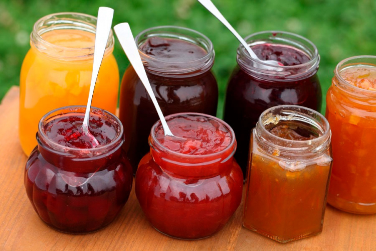
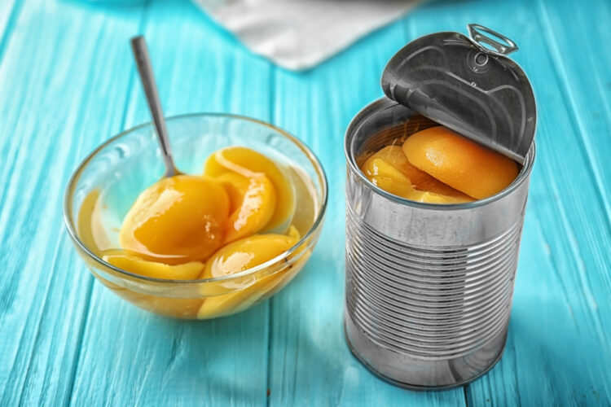
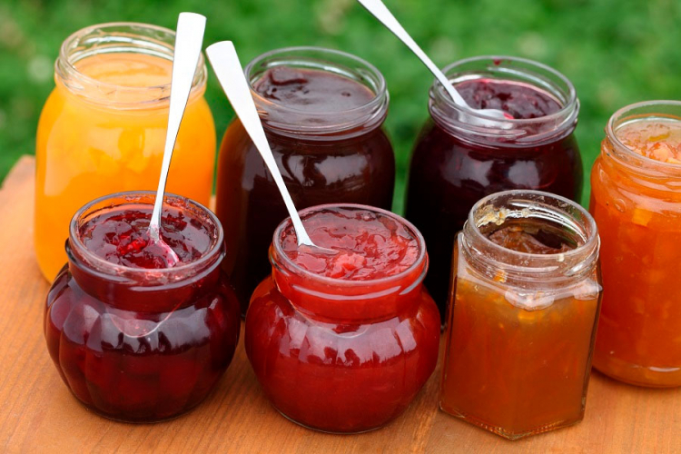
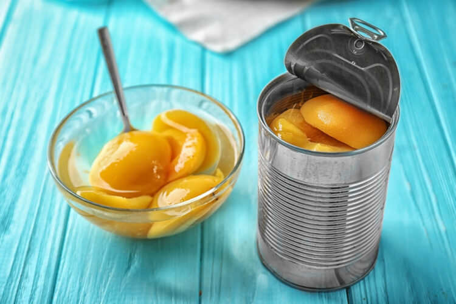

O nama
MFruits je fabrika posvećena preradi voća najvišeg kvaliteta. Naša strast prema voću nas pokreće da kreiramo proizvode koji su zdravi i ukusni. Sa tradicijom dugom više od 20 godina, uveravamo vas da su naši proizvodi rezultat pažljive selekcije i inovativne tehnologije.
Naša misija
Naša misija je da pružimo potrošačima prirodne i zdrave proizvode, uz poštovanje prema prirodi i lokalnim zajednicama.
Naši proizvodi
Sokovi
Prirodni sokovi bez konzervansa, proizvedeni od svežeg voća. Dostupni su u različitim ukusima, uključujući narandžu, jabuku i krušku.
Džemovi
Domaći džemovi od svežeg voća, savršeni za doručak ili užinu. Pripremljeni su bez dodatnih šećera i veštačkih aroma.
Konzervisano voće
Savršeno voće, spremno za svaku priliku. Idealno za kolače, salate ili kao samostalan užitak.
Galerija
Pogledajte neke od naših proizvoda i procesa proizvodnje:
.jpg) 



Kontaktirajte nas
Za više informacija, pišite nam na: info@mfabrika.com.
Možete nas kontaktirati i putem društvenih mreža: